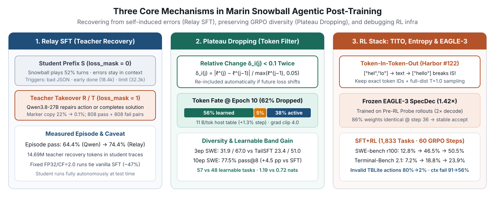

单纯开源模型权重能让人看到最终参数，却很少披露为什么这次训练没有爆 loss、25T tokens 语料如何跨源去重、优化器在两万步时踩过什么数值坑，或者 RL 为什么在中途发生坍缩[4]。源自 Stanford、由 Open Athena 运营的 Marin 项目选择走全流程开放研发（Open Development）路线：代码、数据配比脚本、预注册 Scaling 预测、失败实验、实时追踪面板[1]与中间 checkpoint 全部公开。
本教程按工程时间线系统串讲 Marin 全栈，聚焦其两代核心稀疏 MoE 模型：
- Marin “Mochi” 535B-A23B：535.3B 总参数 / 22.8B 非 embedding 激活参数的 Normalized LatentMoE，在 704 张 NVIDIA GB200（11 组 NVL72 机柜）上完成 18T tokens 预训练（2026 年 11 月 5 日收官）[1][2]，并公开发布 57 个预训练与 262K 长上下文扩展 checkpoint[5]。
- Marin “Snowball” 67B-A2B：在 TPU 上以 10T tokens 高度过训的模型，以少 $10\times$ 算力和 $16\times$ 激活参数击败早先 Marin 32B[8]，并作为主力实验床跑通了 Coding Agent SFT 与 GRPO 全套闭环[11][12]。
阅读路线：第 1 章打通参数核算、Attention/RoPE/Hyperball、Quantile Balancing 与并行原语；第 2–5 章围绕 commit 12d8b6f09f96[17][20] 解析 Mochi 的架构、Datakit 25T 数据、GB200 预训练及 262K 扩窗；第 6–8 章深入 Snowball 的 Relay SFT / Plateau Dropping / TITO GRPO 与 26 项基准 Eval Policy[16]。
为什么需要 Marin：全流程公开的 Frontier Engineering
在大规模集群上训练 MoE，核心难点在于数据重复度、机柜间通信带宽、优化器数值稳定性与评测口径之间的强耦合。Open Athena 在 7 月 15 日拿到 768 张 GB200（11 个各含 64 张健康卡的 NVL72 机柜）并设定 12 月交付期限后，为整个架构与训练设计定下三条硬原则[2]：
- Realized MFU 优先于纸面效率：架构创新能否进主线，先看在 GB200 上的实测 MFU。这直接催生了 LatentMoE、宽浅网络（宽深比 128）以及适配
jax.lax.scan的全同构层设计。 - 预注册预测与全透明复盘：借助五阶 Scaling Ladder 对 $300\times$ 算力跨度外推 Paloma loss，直播训练曲线，让每一次掉点或内核调优都成为可证伪的科学记录[14]。
- 面向 SFT 与 RL 的下游承接能力：保留经过充分验证的诱导偏置（SwiGLU、GQA、RMSNorm、z-loss），并将线性学习率终点留在峰值的 5%，方便社区直接开展 SFT 与 RL[2]。

1. 基础知识：算力核算、路由几何与分布式并行
在阅读 Hero 源码和 RL 轨迹之前，我们先对齐贯穿全栈的四套基础公式，内容整合自 JAX Scaling Book[27]、Transformer 计算量推导[34]、分布式并行原语[33]以及苏剑林关于 MoE 几何与 Quantile Balancing 的系列推导[28]。
张量维度、激活参数与 LatentMoE FLOPs 修正
Marin 的 JAX 实现将 token 特征按行向量组织，主干激活张量为 $X \in \mathbb{R}^{B \times S \times D}$，其中 $B$ 是全局序列数，$S$ 是序列长度（启动期 4,096），$D$ 是骨干隐藏维度（d6144 指 $D = 6144$）。Attention 的 Q 头数为 $H_q$、KV 头数为 $H_{kv}$、单头宽度 $d_h = 128$，缩放梯子中始终保持 $D = H_q d_h$。
对于非路由部分 $N_{\text{fix}}$（Attention、Router、Shared Experts、Norm 等）、$E$ 个规模均为 $P_e$ 的 Routed Experts 与每 token 选择 $K$ 个专家的 MoE 模块，总参数与激活参数按如下口径核算[18]：
$$N_{\text{total}} = N_{\text{fix}} + E P_e, \qquad N_{\text{active}} \approx N_{\text{fix}} + K P_e$$注意不能直接用 $N_{\text{total}} \times K/E$ 估算激活参数，因为 $N_{\text{fix}}$ 以 $100\%$ 参与前向。按 Mochi 规格（D=6144、L=48、V=128,256）逐层累加，非 embedding 参数总量为 $533.8\text{B}$（含 untied embedding/lm_head 为 $535.3\text{B}$），激活非 embedding 参数为 $22.8\text{B}$（含头尾为 $24.4\text{B}$）[18]。
常规稠密 Transformer 单次迭代的训练计算量（按反向≈2×前向合计 3×）可展开为[34]：
$$F_{\text{iter}}^{\text{dense}} = 72 B L S D^2 \left(1 + \frac{S}{6D} + \frac{V}{12 D L}\right) = \underbrace{72 B L S D^2}_{\text{线性层与 MLP}} + \underbrace{12 B L S^2 D}_{\text{Attention}} + \underbrace{6 B S D V}_{\text{lm\_head}}$$切换到 LatentMoE 后，Levanter 默认函数 lm_flops_per_token 仍按主干宽度 $D$ 计算 Routed Experts。train.py#L346[25] 因此显式减去全宽专家代价并加上下/上投影代价：
如果不做这项修正，$d_l = 3072 = D/2$ 的一半专家计算量会让报告的 MFU 被高估接近一倍。实测 Model FLOPs Utilization (MFU) 随之定义为解析模型训练 FLOPs 与加速器理论 BF16 峰值吞吐之比[27]：
$$\text{MFU} = \frac{F_{\text{train/token}} \times \text{tokens/sec}}{N_{\text{GPU}} \times P_{\text{peak/GPU}}}$$GQA vs. MLA、Partial RoPE、Hyperball 与 Logit z-loss
按单序列缓存 $S$ 个位置、单元素占 $b_{\text{elem}}$ 字节计算，MHA 单层 KV cache 占用为 $2 S H_q d_h b_{\text{elem}}$（BF16 下 48 头每 token 每层需 $24\text{ KiB}$）。GQA 按 $g(h) = \lfloor h / (H_q/H_{kv}) \rfloor$ 共享 KV 头以等比压缩推理显存。需要明确区分 MLA 与 LatentMoE：MLA 把 Attention 的 K/V 表示 压缩为低秩向量 $c_t = x_t W_{\text{DKV}}$（配合解耦 RoPE），而 Mochi 在 Attention 端选用更简单的 GQA，把低维潜空间压缩用在 MoE 专家计算与 All-to-All 通信路径上[2]。
位置编码、前向归一化与权重几何约束则遵循如下配合逻辑：
- Partial RoPE 与 NoPE：RoPE 用频率 $\omega_j = b^{-2j/d_r}$ 旋转坐标对，使内积 $(R(p\omega_j)q)^\top (R(t\omega_j)k) = q^\top R((t-p)\omega_j)k$ 仅依赖相对距离 $t - p$。Mochi 在局部 SWA 层只对头维度的一半（50%）施加 RoPE，全局层则彻底使用 NoPE[2]。
- LeRoPE vs. YaRN / SSMax 温度缩放：LeRoPE 让频率缩放 $\tilde{\omega}_j = e^{\alpha_j}\omega_j$ 可训练；YaRN 则通过分段插值低频、再对 Attention logits 施加对数长度缩放因子 $m(s)^2$（$m(s) = 1 + 0.1\ln s$）来实现长窗外推[27]。
- QK RMSNorm 与 GatedNorm：Mochi 在头维度上使用无参数
RMSNorm并乘以固定系数qk_mult$c=1.3$，使打分变成纯粹角度匹配 $\ell = c\sqrt{d_h}\cos\theta$（约 $14.71\cos\theta$）；而RMSNorm后的 rank-128 GatedNorm（$u \odot \sigma(\operatorname{SiLU}(u W_{\text{down}}) W_{\text{up}})$）则补充输入相关的逐通道非线性门控。
务必分清前向归一化与优化器端 Hyperball (MuonH / AdamH) 的作用边界：前向 Norm 约束激活值，而 Hyperball 在每次参数更新后将权重块投影回初始 Frobenius 范数球面 $R = \|W\|_F$：
正因为 Hyperball 锁死了权重范数（消除了普通 Adam 训练前半段因权重膨胀带来的“隐式学习率衰减”），WSD 的稳定平台期在 Hyperball 下反而不如直接做线性学习率衰减[2]。此外，即便输出头 lm_head 在 Hyperball 上保持定长，进入它之前的 final_norm 可学习缩放仍会自由增长，因此必须配合权重 $10^{-4}$ 的 logit $z$-loss 防止 softmax 尖锐度爆炸（交叉熵与困惑度满足 $\text{PPL} = e^{\mathcal{L}_{\text{CE}}}$）[2]。
MoE 路由几何：从 Aux Loss 到 Quantile Balancing
从苏剑林的几何视角看，MoE 本质是用少量 Router 选出的单位方向 $e_i$ 及模长预测 $\rho_i$ 来稀疏逼近大 FFN $\sum_{i=1}^E \rho_i e_i$[28]。若没有主动均衡机制，冷门专家一旦被选得少、梯度更新就少，进而更难被选中，最终迅速“死亡”[7]。
传统方案各有超参负担：GShard 辅助损失（$\alpha\mathcal{L}_{\text{bal}}$）会与语言模型目标争夺梯度；DeepSeek-V3 提出 Aux-Loss-Free 偏置更新 $b_i \leftarrow b_i + \gamma\operatorname{sign}(\bar{c}-c_i)$（$\gamma=0.001$），Arcee Trinity 在此基础上又引入动量（SMEBU）[7][28]。值得注意的是 bias 的平移不变性：全部专家同加常数 $(b + c\mathbf{1})$ 不改变 top-K 结果，因此相对部分 $(b-\bar{b}\mathbf{1})$ 管均衡，均值部分 $\bar{b}\mathbf{1}$ 甚至可用于动态预算控制。
为彻底去掉均衡步长超参，苏剑林将“在全 batch $M$ 个 token 与 $E$ 个专家间实现精确 $MK/E$ 分配同时最大化匹配分”写作一个线性规划问题[29][30]：
$$\max_{x_{t,i} \in [0,1]} \sum_{t=1}^M \sum_{i=1}^E x_{t,i} s_{t,i} \qquad \text{s.t.} \quad \sum_{i=1}^E x_{t,i} = K,\quad \sum_{t=1}^M x_{t,i} = \frac{MK}{E}$$其对偶乘子直接给出无超参的 Quantile Balancing (QB) 两步交替解法[29]：
- Token 侧阈值：对加了上一步偏置的打分 $s_t + b^{(t)}$ 取第 $(K+1)$ 大值作为临界门槛 $\alpha_t = (s_t + b^{(t)})_{(K+1)}$，算出边界差矩阵 $m_{t,i} = s_{t,i} - \alpha_t$。
- 专家侧分位数：沿 token 维读取每个专家的 $(1 - K/E)$ 上分位数 $\beta_i = Q_{1 - K/E}(\{s_{t,i} - \alpha_t\}_{t=1}^M)$，令 $b^{(t+1)} = -\beta$（带
stop_gradient用于下一步路由）[7][20][25]。
面向自回归单请求解码时看不到未来 token 的问题，Moving Quantile Balancing (MQB)[31] 用因果前缀统计替代全 batch 分位数；而路由门控改用非竞争式的 Sigmoid[32] 则避免了 Softmax 下的“赢家挤出”效应。
分布式并行原语：DP、FSDP、TP、PP、SP 与 EP
在 BF16 计算 + FP32 主权重/一二阶动量的标准混合精度下，仅模型优化器状态就占每参数 $16\text{ B}$——535B 模型约需 $8\text{ TiB}$，远超单张 B200 的 $185\text{ GiB}$ HBM[6]。五大并行维度各自切分不同对象[33]：
| 并行方式 | 切分对象 | 典型通信原语 | Marin / GB200 实际部署分工 |
|---|---|---|---|
| DP | 全局 batch / 序列 | All-Reduce / Reduce-Scatter | 跨机柜 DP=11，走 50 GB/s InfiniBand[6] |
| FSDP | 权重、梯度与优化器状态 | All-Gather + Reduce-Scatter | 机柜内管理 Attention、Shared Experts 等非路由权重 |
| TP (+ SP) | 层内矩阵与 Norm 激活 | All-Reduce / All-Gather | 与 TP 共组，仅当单层放不下时在高速互联域启用 |
| PP | Transformer 层间切分 | 点对点 Send/Recv | 机柜内 HBM 与 Host Offload 足够，Mochi 无需流水线气泡 |
| EP | MoE Routed Experts | All-to-All Dispatch/Combine | 机柜内 EP=64（每卡 6 个专家），独享 900 GB/s NVLink[6] |
为何 360B 还能用纯 FSDP，535B 就必须上 EP？因为在 Mochi 中约 $97\%$ 的参数都在 Routed Experts 里。以单机柜 1,024 条 4K 序列、64 卡、top-8 LatentMoE（3,072 维）估算：每层前向 FSDP 需 All-Gather 约 $20\text{ GiB/GPU}$ 专家权重，而 EP 的 Dispatch + Combine 仅传约 $6\text{ GiB/GPU}$ 压缩 token；而且专家数越多，FSDP 通信线性上涨，EP 激活通信却保持不变[6]。
2. 架构设计：Marin 535B-A23B（Mochi）
Mochi 的每一项组件决策都经过两道关卡验证[2]：
- 等效算力效率（Compute Efficiency）：在 2026 年 5 月基准定律 $L(C) = 1.6 + 88.90 \cdot C^{-0.0941}$ 上对比失分折算算力倍数（如 $1.18\times$ 表示基线多花 $18\%$ 算力才能追平）。
- 实测硬件利用率：直接在 GB200 上测定该组件是否引入额外的 MFU 负收益或显存尖峰。
浅宽骨干（d6144、48 层）与全同构 MoE
相比动辄 60–90 层的深窄方案，Mochi 采用 48 层 × 6,144 宽（宽深比 128）的浅宽造型，且取消所有前置 Dense 层[2][17]。更宽的 GEMM 明显提高 GPU 算子饱和度；全层同构 MoE 则保证整个 48 层堆叠能够被单个低显存开销的 jax.lax.scan 统一编译与调度[2]。
| 核心超参 | Marin 535B-A23B（Mochi） | Marin Snowball 67B-A2B | Marin 32B（Phase 3+ 稠密） |
|---|---|---|---|
| 总参数 / 激活参数 | 535.3B / 22.8B（非 embed 激活） | 67B / ~2B active | 32B Dense（Qwen3 QK-Norm 骨干） |
| 深度 × 宽度（$L \times D$） | 48 层 × 6,144（宽深比 128） | 面向 TPU 的细粒度深度 MoE | 64 层 × 5,120（$d_{\text{ff}} = 27648$） |
| MoE 路由与共享专家 | 8 / 384 LatentMoE ($d_l=3072$) + 2 共享 | 细粒度高稀疏 TPU MoE | 稠密 SwiGLU |
| Attention 布局 | 3:1 SWA (2048) / Global；48Q ($d_h=128$) | 兼顾推理 rollout 速度的局部/全局配比 | 全因果 40Q / 8KV GQA |
| KV 头数与位置编码 | 12 KV (4:1 局部) / 6 KV (8:1 全局)；50% RoPE / NoPE | 极致压缩 KV cache 以加速 RL | 8 KV；全 RoPE + QK-Norm |
| 训练预算 | 18T tokens（~13× 过训，$2.7\times 10^{24}$ FLOPs） | 10T tokens（~100× 过训，$1.2\times 10^{23}$ FLOPs） | 6.437T tokens（Mantis Cooldown） |
| 硬件与训练栈 | 704×GB200（DP11 × EP64），JAX/Grug | Google TPU v4/v5p，SkyRL + Harbor 后训练 | TPU v4-2048 切片 |

至于 Attention Residuals、mHC、MLA、Multi-Token Prediction (MTP)、权重量享循环深度（Looped Depth）[35][36] 以及超词表 n-gram embedding 等机制，或因赶在 7 月集群工期前未在 GB200 上跑出足够 MFU，或因可由独立投机解码草稿模型替代，在本轮 Hero 中被果断延后[2]。
Normalized LatentMoE：修复 0.25× 初始化尺度坍缩
在 Mochi 的 LatentMoE 设计中[2][20]，FP32 Router 仍直接读取全宽 $D=6144$ 特征以保留完整路由判别力，2 个共享 SwiGLU 专家也保留在本地全宽通道上（占总激活 MLP 神经元的 $1/3$ 作为兜底）。只有进入 Routed 分支的激活会在 Dispatch 前压半维并在合并后统一升维：
$$z = \operatorname{RMSNorm}_{\gamma}\!\left(x W_{\text{down}}\right), \qquad y_{\text{routed}} = \left(\sum_{e \in \mathcal{K}_{\text{kept}}} g_e E_e(z)\right) W_{\text{up}}$$这里 $W_{\text{down}} \in \mathbb{R}^{6144 \times 3072}$、$W_{\text{up}} \in \mathbb{R}^{3072 \times 6144}$，384 个专家内部的三个 SwiGLU 矩阵均为 $3072 \times 3072$ 方阵。方阵带来了一项额外红利：Muon 的 Newton–Schulz 正交化在行列均相等时能自然均衡每个神经元通道的更新幅度，省去了 NorMuon 或 Aurora 针对长方阵的补丁[2]。
但未经归一化的 LatentMoE 最初表现极差——从 d512 到 d1024 算力效率只有 0.74–0.75×（Issue #6822）。原因在于两层投影都按 $\sigma = 0.5 / \sqrt{D}$ 初始化，信号标准差被连续缩小为 $0.5 \times 0.5 = 0.25$；插入一个可学习标量做诊断时，它几乎立刻爬升到 $\approx 4.0$ 来抵消萎缩。在 w_latent_down 之后加入一个可学习的 RMSNorm(3072)（与 MLA 的低秩 norm 思路异曲同工），不仅将通信量减半，还一举反超基线，拿到 $1.25\times$ 算力效率，使 8/384 以与 4/192 相当的通信成本吃下了细粒度专家的 +13–16% 质量红利[2]。

D=6144）、全宽共享专家与半宽路由瓶颈（d_l=3072 + 可学习 RMSNorm）拆分开来。右：基于 Raw Logits 的 10,000-bin 实时直方图 Quantile Balancing，无需超参且与 GPU 卡数解耦。查看原图Raw Logit 直方图 Top-k QB 与 2.5 Sigmoid 归一化
此前 Open Athena 已在 32B-A5B / 326B tokens（$10^{22}$ FLOP）尺度验证了 Quantile Balancing 零 loss 尖刺与免前置稠密层的稳定性[7]。为在 64 卡 EP 下保持算法与设备数无关，Hero 进一步改进了 Kimi K3 的直方图做法（QbEstimator.HIST，Issue #8033）[2][20]：
- 坚持把 QB bias 加在原始 logits 上而非 Sigmoid 后：DeepSeek-V3 和 Kimi K3 先过 $\sigma(s)$ 利用 $[0,1]$ 定界做直方图，但 Marin 实测表明，在 raw logits 上算分位数在 warmup 期收敛更快——
d768下 token 丢弃率稳定在~2.0%、路由熵高达4.848（满熵 $\ln 128 = 4.852$），显著优于 post-Sigmoid 的3.4–4.9%丢弃率与4.786–4.821熵值[2]。 - 零开销跨卡实时直方图：
_qb_beta_hist先用pmin/pmax锁定当前步边界，用单次jnp.bincount构造 10,000 桶计数并经一次全局整数psum汇总，从高到低累计即可插值读出 $(1-K/E)$ 上分位数 $\beta_e$[20]。 - 无偏置 Sigmoid 重归一化到
2.5：组合权重按不带偏置的原始 logits 经 $g_e = \frac{2.5\,\sigma(s_e)}{\epsilon + \sum_{k \in \mathcal{K}} \sigma(s_k)}$ 计算，保持输出尺度稳定且与均衡反馈正交[20]。
3:1 SWA/Global Attention、固定 1.3 QK-Norm、XSA、GatedNorm 与 SConv
Block 其余模块在稳定训练动力学与保 MFU 上形成紧密闭环[2]：
- 非对称 GQA 与 3:1 SWA (2048) / Global：每 4 层（及末层 47）采用 8:1 GQA 全局 Causal Attention（6 KV 头）+ NoPE；其余 36 层采用 2,048 窗口局部注意力（vLLM 实测仅比 512 慢 2–4%，算力效率却高 $1.10\times$）配 4:1 GQA（12 KV 头）和 50% Partial RoPE。
- 固定
1.3倍率的 QK RMSNorm：无参数增益的 QK RMSNorm 固定乘1.3显著胜过无 QK-Norm（3.0208vs3.0281），且在d2048过训下与自动升至~2.0的可学习 per-head scale 持平（2.6477vs2.6484），同时为长上下文手动拉高注意力集中度留出清晰接口[2]。 - Exclusive Self-Attention (XSA) 与 Head Gate：每头输出减去自身 normalized value 方向的分量 $z_i = y_i - \frac{y_i^\top v_i}{\|v_i\|^2 + 10^{-6}} v_i$ 并接 $2\sigma(x W_{\text{gate}})$ 门控。因为在 Hyperball 下无法像 MAI-Thinking-1 那样把 $W_o$ 零初始化（零矩阵会被永远锁在零球面上），近零成本的 XSA 让 Attention 初期近似恒等旁路，直接将 100 步加速 warmup 测试中的前期 drop rate 从
>50%（30–100 步均值12.7%）腰斩至21%（均值5.6%）[2][20]。 - GatedNorm 与 Embedding RMSNorm：
RMSNorm后接 rank-128GatedNorm（归 MuonH 组），而token_embed置于 Hyperball 之外（Plain Adam 下范数自然从177涨至7,800形成内生相对 LR 衰减），接一层RMSNorm对齐前向尺度贡献了+19%算力效率[2]。 - Short Convolutions (
SConv, kernel=4)：受 Thinking Machines Inkling[36] 启发，在K、attn_out和mlp_out后加跨文档边界掩码（segment_ids）的 4 阶因果深度短卷积，恒等初始化即可在d1024带来最高 $1.19\times$ 算力效率并加速 1 层 Induction Head 形成[2]。注意刻意 不对V加短卷积，防止邻近 token 的 value 混叠破坏 XSA 减除自身 value 的几何纯度！
SConv 挂载位点消融（d1024）[2] | Paloma Macro Loss | 等效算力效率 | 取舍说明 |
|---|---|---|---|
| K, V, attn_out, mlp_out（kernel=4） | 3.0378 | 1.19× | 四处全开效率最高；Hero 去掉 V（d768 仅差 +0.003）以保护 XSA |
| 四处全开，kernel 3 / kernel 2 | 3.0387 / 3.0440 | 1.18× / 1.13× | 减小卷积窗会损失一部分 1 层 Induction 增益 |
| 四处全开，仅全局层 | 3.0482 | 1.10× | 只覆 1/4 层数，收益同步折半 |
| 仅 mlp_out / 仅 K / 仅 attn_out | 3.0506 / 3.0542 / 3.0571 | 1.08× / 1.05× / 1.03× | 三个位点增益基本可线性叠加 |
| 无 SConv 基线 | 3.0610 | 1.00× | 在 Hero d768 上全关 SConv 损失 +0.028 loss（3.0489 vs 3.0208） |
核心 JAX / Equinox 源码剖析
以下代码直接节选整理自 experiments/grug/moe_hero_ep/model.py[20]，集中展示了 XSA 投影、Raw Logits 直方图 QB 以及 Normalized LatentMoE 的张量流转：
# 节选自 experiments/grug/moe_hero_ep/model.py (commit 12d8b6f09f96)
def xsa_and_head_gate(attn_out, v, x, attn_gate, w_o, batch_spec):
aligned_v = reshard(align_kv_heads(v, num_q_heads=attn_out.shape[2]), _partition_spec_of(attn_out))
dot = jnp.sum(attn_out * aligned_v, axis=-1, keepdims=True)
v_norm_sq = jnp.sum(aligned_v * aligned_v, axis=-1, keepdims=True)
# XSA：逐头剔除输出在自身 value 方向上的投影，避免自强化 sink
attn_out = attn_out - (dot / (v_norm_sq + 1e-6)) * aligned_v
gate = 2.0 * jax.nn.sigmoid(jnp.einsum("bsd,dn->bsn", x, attn_gate))[..., None]
attn_out = jnp.reshape(gate * attn_out, (*attn_out.shape[:-2], -1), out_sharding=P(_BATCH_AXES, None, "model"))
return jnp.einsum("bsh,hd->bsd", attn_out, w_o, out_sharding=batch_spec)
def moe_forward_latent_qb(self, x_flat):
# 1. Router 读取全宽 D=6144；QB bias 仅作用在带 stop_gradient 的 Top-K 选路 logits 上
logits = jnp.einsum("td,de->te", x_flat, reshard(self.router, P(None, None))).astype(jnp.float32)
biased = logits + jax.lax.stop_gradient(self.router_bias)
topk_biased, idx_plus_1 = jax.lax.top_k(biased, self.cfg.num_experts_per_token + 1)
qb_alpha, selected = topk_biased[:, -1:], idx_plus_1[:, :-1]
# 2. 用无偏 logits 算 Sigmoid 并重归一化到 2.5
raw_weights = jax.nn.sigmoid(jnp.take_along_axis(logits, selected, axis=-1))
weights = (raw_weights * (2.5 / (jnp.sum(raw_weights, axis=-1, keepdims=True) + 1e-9))).astype(x_flat.dtype)
# 3. 跨卡 10,000 分箱实时直方图计算 (1 - K/E) 上分位数 beta
beta, lo, hi = _qb_beta_hist(reshard(logits - qb_alpha, P(_BATCH_AXES, None)), mesh=get_abstract_mesh(),
num_experts_per_token=8, num_experts=384, n_bins=10_000)
# 4. Normalized LatentMoE 瓶颈：6144 -> 3072 -> 可学习 RMSNorm -> EP64 -> 3072 -> 6144
routed_in = self.latent_norm(jnp.einsum("td,dl->tl", x_flat, self.w_latent_down.astype(x_flat.dtype)))
routed_latent, overflow = self.expert_mlp(routed_in, selected.astype(jnp.int32), weights, report_capacity_overflow=True)
routed_out = jnp.einsum("tl,ld->td", routed_latent, self.w_latent_up.astype(x_flat.dtype))
return routed_out, {"qb_beta": beta, "overflow": overflow.total}3. 数据处理：Datakit 与 Harrier 25T 语料管线
公开数据往往高度重合（不同机构对 Common Crawl 重复抓取与合成改写），甚至在 train split 夹带评测集。Marin 的 Datakit[3] 负责将 152 份异构开源数据统一标准化、全局去重去污染，并在尊重原作者下架权利的前提下完成可复现配比[3][19]。
152 个数据源、Word 5-Gram MinHash/LSH 去重与 13-Gram 去污染
Datakit 在 sources.py 中登记了来自 AI2、NVIDIA、HuggingFace、HPLT 及各类数学/书籍/Agent 轨迹的 152 个公开数据集，官方管线口径对应 18.71B 原始文档、25.25T Llama-3 tokens（Hero issue 早期池口径曾记作 25.6T / 去重后 23.106T）：
- 格式归一与不转售托管：写出含稳定文本哈希与
source_id的标准 Parquet，清洗极端空白页并固定 upstream commit，确保原作者在 Stack v3 等仓库删库退出时 Marin 能自动同步尊重[3]。 - 精确哈希 + Word 5-Gram MinHash/LSH 去重：精确哈希清理约 5.05 亿条源内与跨源完全重复；LSH 基于词级 5-gram（切勿当成 5 个 BPE tokens）近似检索加二次判定，累计移除了 2.33B 文档 / 2.13T tokens（8.4%）——其中 93.2% 的跨源重复链接仅来自 Common Crawl 与 Nemotron 合成改写等三组数据对[3]。
- 结构敏感数据免模糊去重（
store_4d2e363d）：由于 DNA 碱基与工具调用 JSON 对单字符极敏感，LSH 会产生严重误杀；Hero 2026.08.18 数据库将 16 个敏感源设为 fuzzy-dedup 豁免，使可用语料池从23.01T恢复至23.11T[19]。 - 精确 13-Gram Bloom 过滤去污染：任意段落若有 $\ge 50\%$ 的 13 词窗口命中 Artificial Analysis 或 Marin 评测集即整篇踢除，再删去 13.66B tokens[3]。团队也公开披露了教训：早先 Marin 32B 曾从 Dolmino 缓存漏入 GSM8K（在 Mantis cooldown 修正[10]），Mochi 也在 step 362k 排查出占 Paloma 1/16 权重的 Penn Treebank 泄漏（贡献约
0.02loss 偏移）[2]。
Harrier 40×5 分桶与 Simulated Epoching 代理回归配比
仅按数据集名调权重无法区分 Common Crawl 里的优质教材与垃圾广告。Datakit 把昂贵的神经表征提取与廉价的分类实验彻底解耦[3]：
- 一次性 Harrier 表征：使用微软开源检索模型 Harrier（Qwen 微调）为每篇文档计算 1,024 维向量[3]。
- 均匀占空比的 40 主题聚类：先做 5,000 簇球面 $k$-means，再层次合并为 40 个各占语料 $\ge 1\%$ 的等规模大类，保证调权灵敏度；经 LLM“混入识别（Intruder Test）”检验，准确率远超 $20\%$ 随机基线（1,000 簇达 $84.4\%$，40 大类达 $62.5\%$）[3]。
- 5 档质量分型（保留不预删）：按代码、正文、数学分别标定 FineWeb-Edu 风格分类器分 5 档，组成 $40 \times 5 = 200$ 个配比桶——评分而非预过滤让同一份底层语料可随算力预算动态调配[3]。
- Simulated Epoching 代理回归：用 872–1,000+ 个小模型代理实验（
grug-moe-mix-swarm）拟合各桶权重对基准失分的回归曲线。关键设计在于当算力 $\le 10^{23}$ FLOPs 时开启simulated_epoching，按激活参数比例同步缩减每个桶的可用总量，使小模型真实复现 Mochi 的每桶重复暴露倍数（最高2.09 epochs，远低于 8-epoch 上限）[3][19]。
最终 harrier_mix_2026_08_18.py 采用 80%/20% 两阶段配比（参考预算为 15T + 3.75T 的 18.75T 参考总量，Hero 启动时按比例折算至 18T 目标），经 TokenizedCache、Feistel 置乱[10]与带边界掩码的 4,096 打包送入网格，阻断拼接文档间的跨篇 Attention 与短卷积泄漏[19]。
4. 预训练与 535B 级系统工程
把 535B MoE 在 704 张 GB200 上稳定推过 18T tokens，核心突破发生在集群通信原语、分片安全优化器与缩放梯子预演三处。
11 机柜 GB200 拓扑、Pooled-Wave EP 与 Ragged All-to-All
每台 NVL72 机柜（保证至少 64 张健康卡，16 节点 × 4 B200，合计 $11.6\text{ TiB}$ HBM）内部具备单向 $900\text{ GB/s}$ NVLink；跨机柜 InfiniBand 带宽仅为 $50\text{ GB/s}$——存在 $18\times$ 的带宽断崖[6]。Marin 的拓扑映射严丝合缝贴合硬件边界：
- 机柜内
EP=64：384 个路由专家均分到 64 张卡上，每卡常驻 6 个专家（$\text{GPU}(e)=\lfloor e/6\rfloor$，$\text{local}(e)=e\bmod 6$），全部 All-to-All 留在 NVLink 内；共享专家与非专家层在机柜内做 FSDP。 - 机柜间
DP=11：复制 11 组机柜单元（replica_dcn），全局单步批大小为 $11,264 \times 4,096 = 46,137,344$ tokens（单卡 16 序列 = $65,536$ tokens，对应 $524,288$ 次 top-8 assignment）。
8 月 20 日开跑时，OpenXLA 现成的 ragged_all_to_all 仅能跑到 $15\%$ MFU 且频发 NCCL 挂死。Rafal Wojdyla 迅速编写了静态定容核 Destination-Pooled Static-Wave All-to-All（ep_fixed_pooled_wave_all_to_all.py）先保 20%+ MFU 开机[6][21]：
- 按目标卡共享发送池：同卡上的 6 个本地专家共享该目标卡的发送配额 $C_{\text{pool}} = \lceil \frac{1.15 \times 524288}{64 \times 3} \rceil = 3141$（另加 1 行 header 直接携带
local_id 0..5，省去独立元数据通信）。 - 3 波条带化静态执行：发往同一目标卡的 assignment 按 $r$ 分配到 $\text{wave}=r\bmod 3$、$\text{slot}=\lfloor r/3 \rfloor$，将临时显存压至 $1/3$；每波都能并行算本卡全部 6 个专家的 batched
6×SwiGLU。 - 轮询接收与不可逆截断：接收端按源卡 round-robin 汇总至每专家每波上限 $C_{\text{expert}} = \lceil \frac{1.15 \times 524288}{6 \times 3} \rceil = 33497$。超出部分直接丢弃（贡献归零且不重归一化剩余权重，也绝不推迟到下一波重传）[2][21]。

DP11 × EP64）、3-Wave 目的卡共享池静态协议（CF=1.15，Sustained MFU 21.5%，丢包率 3.4%）及约 82k 步无缝热切换至 Device-Initiated Ragged All-to-All（丢包率降至 0.01%，MFU 升至 23% → 30%）。查看原图尽管存在 ~3.4% 的训练期 drop rate，先前的 d2048 4K→65K 极端压测证明即便丢包暴涨至 37%，无丢包评估的 Paloma loss 仍与 FSDP 相差不到 0.008[2]。运行至第 82,000 步（约 21% 进度）时，Matt Wittmann 成功打通高速 Ragged All-to-All 内核并完成无缝热切换，丢包率瞬间落回 0.01%（4K）/ 0.03%（65K），生产 MFU 跃升至 23%–30%[2][6]。
MuonH / AdamH / Adam 参数分组与 _pin_sharding 修复
一次前向反向传播算出梯度后，optax.multi_transform（optimizer.py）按参数路径将权重分发至三大优化组，同时把 router_bias 留在梯度之外交由 QB 闭环接管[22][23][24]：
| 优化器分组 | create_mask 路由参数范围 | 更新规则与系统实现细节 |
|---|---|---|
| MuonH（$\text{lr} = \frac{13}{3}\text{lr}_{\text{adam}}$） | Attention 矩阵、Routed/Shared 专家、Latent 投影、rank-128 GatedNorm | Nesterov ($\mu=0.95$) + 5 步五次 BF16 Newton–Schulz 正交化（仅限机柜内重分片并用 QuACK X@X.T 核）+ $\sqrt{\max(1, d_{\text{out}}/d_{\text{in}})}$ + Hyperball 投影[22][24] |
| AdamH（$\text{lr}_{\text{adamh}} = \text{lr}_{\text{muonh}}$） | 未共享权重输出头 output_proj / lm_head | 保留应对稠密词表梯度的逐元素 Adam 方向 + Hyperball 约束；比 Cautious AdamW 快 1.08×（#8350）[23] |
| Plain Adam（$\text{lr}_{\text{adam}}$，无 WD） | token_embed、.router、attn_gate、1D Norm .weight 增益（含 latent_norm）、SConv 核 | 不进 Hyperball 且无权重衰减——既消除 embed 在 AdamH 下的 700× 梯度爆炸（#5773），又允许 embed 范数 177→7,800 自然降温[2][22] |
工程侧采用设备端 BF16 计算配 Pinned Host RAM 存放 FP32 主权重与优化器状态（FP32_PINNED_HOST），叠加 recompute_all 重计算、FlashAttention-4（gpu_fa4_cute）以及分块流式 fused_linear_softmax_cross_entropy_loss（将 CE 延迟从 $171.3\text{ ms}$ 压至 $81.9\text{ ms}$，仅多占 $0.04\text{ GiB}$ HBM）[20][25]。此外，开跑前密集压测还挖出一个惊险的 XLA SPMD 数值隐患（Issue #8073）：jnp.linalg.norm 对分片中间张量降低归约会偶发多倍叠加，导致每 $10^4$ 步出现一次 lm_head 范数从 150.7 → 21.4 坍缩、loss 瞬间冲至 9.14。改用显式 _pin_sharding(new_p, p) 与 FP32 平方和后彻底根治[22][23]：
# 节选自 experiments/grug/moe_hero_ep/adamh.py (#8073 SPMD 分片归约修复)
def _scale_invariant_2d(p, u, lr):
p_norm = jnp.sqrt(jnp.sum(jnp.square(p.astype(jnp.float32))))
u_norm = jnp.sqrt(jnp.sum(jnp.square(u.astype(jnp.float32))))
new_p = p - lr * u * p_norm / jnp.maximum(u_norm, 1e-10)
# 显式将中间张量钉回 p 的 NamedSharding，防止 SPMD 自动推断归约重复计数
new_p = jax.sharding.reshard(new_p, _target_named_sharding(p))
new_p_norm = jnp.sqrt(jnp.sum(jnp.square(new_p.astype(jnp.float32))))
return new_p / jnp.maximum(new_p_norm, 1e-10) * p_norm - p五阶 Scaling Ladder 与 MoeHeuristic 学习率拟合律
Marin 通过小尺度网格扫描拟合出高置信度学习率公式 MoeHeuristic（$R^2 = 0.978$，Issues #7856/#8003）[17]，并在五个同配方梯子档位上按每激活参数 791 tokens 对齐过训率（launch_scaling_ladder.py）[18]：
同时配置 $1\%$ 线性 warmup 与线性衰减至峰值 5%。整套五阶梯子仅消耗主运行约 $1\%$ 算力，且通过 batch = 1024 × racks 保持单机柜密度不变，在 d2048 处 1:1 真实还原了 Hero 的 EP 丢包与跨机柜 DCN 特性[14][18]：
梯子档位（D / L） | GB200 机柜（卡数） | Batch（序列数） | 总步数 | Tokens（791/act） | 激活 / 总参数 | 训练 FLOPs |
|---|---|---|---|---|---|---|
d768 (8L) | 1 (64) | 1,024 | 11,420 | 48B | 61M / 1.6B | $5.5\times 10^{19}$ |
d1024 (12L) | 2 (128) | 2,048 | 15,276 | 128B | 162M / 4.0B | $2.7\times 10^{20}$ |
d1536 (16L) | 6 (384) | 6,144 | 15,128 | 381B | 481M / 11.5B | $1.8\times 10^{21}$ |
d2048 (22L) | 11 (704) | 11,264 | 20,072 | 926B | 1.2B / 27.7B | $9.2\times 10^{21}$ |
d6144（48L, Hero） | 11 (704) | 11,264 | 390,251* | 18T | 22.8B / 535.3B | $2.7\times 10^{24}$ |
*Mochi 于 2026 年 11 月 5 日跑完原定 390,251 步（约 18.1T tokens），随后继续执行超期 262K 扩窗至 ~393,490 步[1]。

2.039；27.7B 在 81% 处因硬件故障未续跑，空心点为拟合外推）。来源：Larry Dial, Open Athena (2026) [2]。
5. Mid-Training：Cooldown 退火与 262K 上下文扩展
在短窗混合语料上完成主预训练后，Mochi 在最后 20% 与收尾扩窗段通过两阶段 Mid-Training 拔高推理质量并解锁 262K 仓库级上下文能力[1][2][5]。
80% Phase-2 Cooldown 切换与权重平均
在全部进度的 ~80%（10 月 22 日），训练如期切入高质量 Phase-2 Cooldown 数据配方[1][19]。与早期缩放梯子上 Phase-2 切入略微抬升 loss 不同，Hero 优化后的 Phase-2 配比在线性学习率收尾阶段平滑压低了训练与验证集 loss[2]。
进入 65K 收尾的最后 5,000 步时，团队把存盘密度加密到每 500 步一次并做 Checkpoint Weight Averaging。实测权重平均在所有评测语料上一致压低 loss，并作为后续 262K 扩窗及 HuggingFace 57 个公开 checkpoint（含 10 个长上下文 checkpoint）的基础节点[1][5]。
4K → 16K → 65K → 262K 渐进扩窗与 QK 温度重标定
为兼顾前期吞吐与后期长距检索，Mochi 保持全局每步 46.14M tokens 不变，分三步拉长上下文并配套上调 QK 缩放[1][2][5]：
- 4K → 16K（10 月 14 日，~65% 进度）：上调
qk_mult至1.48；对比同权重 4K 重测证实，当即下跌的0.031eval loss 来自更长前缀自带的条件信息增量，因此后续外推榜单统一按 4K 重评校准[1][14]。 - 16K → 65K（第 372,000 步，11 月 1 日）：同步拉高 EP 容量余量把长序丢包压到
0.03%，更高效的 FlashAttention-4 使 MFU 再升约 3 个百分点，此时固定qk_mult从1.3 → 1.66[1][2]。 - 262K 计划外扩展（11 月 6–9 日）：从平均后权重出发，提高长文档采样权重并对 12 个全局 NoPE 层启用带截断的对数平方缩放（仅对 $n \gt 65{,}536$ 生效）[2]：
由于 50% Partial RoPE 只存在于窗口截断在 2,048 的局部层、而全部 12 个全局层采用 NoPE，262K 扩展得以直接围绕 Attention 温度聚焦做轻量调优，全程未出现扩窗爆 loss 现象。
6. 后训练 I：SFT、Relay SFT 与 Plateau Dropping
由于 Mochi 在 2026 年 11 月刚刚启动指令微调[1]，Open Athena 把完整的开源 SFT 与 Agentic RL 工具链全部先在 10T tokens 预训练的 Snowball 67B-A2B 上跑通并做足了消融剖析[8]。
从文档公地到任务环境：Snowball 开源后训练 DAG
正如 David Hall 在 There Is No Post-Training Data Commons[9] 中所指出的：预训练有半个世纪积累的互联网“文档公地”（Common Crawl、GitHub、ArXiv）可供采矿，而后训练与强化学习消费的是可交互的任务（Tasks）——必须同时打包确定性沙盒环境、任务意图、工具接口与自动评分器。当今人类社会只有软件工程（Git、CI 单元测试与容器）天然沉淀了可重复执行的“任务档案”。
基于 SkyRL 与 Harbor 在 Marin monorepo 内重建后训练栈后，Ben Feuer 与社区研究者将 100 余组实验整理成一张包含 14 个节点的有向无环图（DAG），综合 SFT、RLVR、FTPO 与 DARE-TIES 模型融合四类技术交付了达到 GPT-OSS-20B 水准的 Snowball v0.1[8][16]。


Domain Coding SFT 与教师接力 Relay SFT
直接对通用 SFT 基座 Snowball 09-21 做领域 Coding SFT（采用 Qwen3.8-27B 在 CalibForge 任务上的轨迹配以 Kimi 演示）就已将 SWE-bench Verified 从 12.8% 推高至 46.5%[11]。但纯教师示教存在暴露偏差（Exposure Bias）：老师从未走入学生自己在真实环境下容易犯的半途死胡同。
为此 Donghyun Lee 设计了 Relay SFT，收集“学生真实出错状态 → 老师接管恢复”的混合轨迹[11][13]：
- Snowball 先走前半程（
loss_mask = 0，占 52% 轮次）：一旦触发非法 JSON 工具调用、过早声明done（中位上下文 18.4k / 7 轮）或逼近窗口上限（32.3k / 11 轮）即由调度器触发接力。 - Qwen3.8-27B 修复并续写（
loss_mask = 1）：15% 样本仅做局部修复后立刻还给 Snowball 续跑，其余由老师接管验证，并剔除22% → 0.1%的模板串标拷贝。 - 实证效果与客观结论：接力把 7,427 局的任务完成率从纯 Qwen 的
64.4%拉升到74.4%（精挑 808 胜 + 808 真败对照训练集）[13]。不过在修正下节所述的 SFT 精度与容量深坑后，全自主评测显示 Relay SFT 与高质量 Vanilla CalibForge+Kimi SFT 基本打平（47.0%vs46.5%SWE；经 30 步 RL 后43.5%vs47.0%）[11]。
Plateau Dropping 与四个致命 SFT 基建深坑
多轮 SFT 虽能刷高单次 pass@1，却会过度压低模型分布熵与多次采样覆盖率（pass@8），让后续 GRPO 无梯度可学。鉴于序列级 TailSFT 在长程 Agent 轨迹上全部失效（3 epoch pass@8 仅 51.0%，低于普通 SFT 的 58.0%），Harshit Varma 等人提出了 token 级 Plateau Dropping[12]：
设定阈值 $\tau = 0.1$、底噪下界 $\varepsilon = 0.05$（仅在 Host RAM 维护 $11\text{ B/token}$ 的历史表，仅增 1.3% 步时，不足主状态 1%），对所有 token 继续监视 loss 但剔除连续两轮变化过小的条目。第 10 轮结束时约有 62% 的训练 token 被自动跳过（56% 已学会低 loss、5% 顽固卡住高 loss），从而在 SWE-bench 上相比 Vanilla SFT 保住了更多 GRPO 可学任务（57 vs 48 个任务）与近两倍的多样性熵（1.19 vs 0.72 nats）[12]：
Agentic SFT 消融（Snowball 09-21，8 种子）[12] | SWE pass@1 | SWE pass@8 | TB-Lite pass@1 / @8 | 不确定位点平均熵 |
|---|---|---|---|---|
Base (09-21 通用 SFT) | 19.3% | 46.0% | 16.6% / 50.5% | 1.85 nats |
Vanilla SFT（3 轮，lr=1e-4） | 23.4% | 58.0% | — | — |
| TailSFT（50% 渐进 / 25% 固定 / token 级，3 轮） | 23.4% / 22.5% / 18.0% | 51.0% / 51.0% / 46.0% | — | — |
Plateau Dropping（3 轮，lr=1e-4） | 31.9% | 67.0% | — | — |
Vanilla SFT（10 轮，调优 lr=3e-4） | 49.9% | 73.0% | 33.9% / 64.9% | 0.72 nats |
Plateau Dropping（10 轮，lr=1e-4，clip=4.0） | 48.8% | 77.5% | 36.1% / 68.0% | 1.19 nats |
同时，附录 A 记录了四个足以让任何 Agentic SFT 实验结论完全失真的基建深坑[12]：
- 主权重意外留在 BF16：Levanter 继承了 BF16 checkpoint 精度，导致低于
~0.4%的 Adam 微小更新全被舍入归零（1,520 步后竟有92–95%权重纹丝不动），切换 FP32 主权重后才恢复正常（89%权重发生有效更新）。 - 专家
CF=1.0造成14–19%丢包：将 SFT 的 capacity factor 提高到2.0后溢出率从0.16% → 0%，与独立推理引擎的 loss 对齐到0.0002。 - 行填充高估实际遍历轮数：64K SWE 与 32K terminal 打包行含
26%/16%padding，名义 “10 epoch” 实际只相当于 7.4 与 8.6 遍完整遍历。 grad_clip=1.0暗伤 Plateau Dropping：仅在保留 token 上求平均使得梯度范数放大 $2\text{–}3\times$，clip=1.0悄然裁剪了 50–100% 训练步（loss 曲线完全看不出异常，评测pass@8却暴跌6.0个点），把上限调至4.0才还原出78.0%的真实水平。
7. 后训练 II：用 RL 将 Snowball 训练成 Coding Agent
为什么早期直接跑 GRPO 几乎毫无起色？在拆解完数百条运行轨迹与概率对齐日志后，团队发现真正拖垮 RL 的不是算法本身，而是采样概率失配、分词链条断裂以及执行格式错误[11]。
Pre-RL Probe、Entropy Collapse 与五项训练栈修复（TITO）
正式开启 GRPO 前，团队对 R2E-Gym 任务每题采样 8 次做 Pre-RL Probe 诊断[11]：结果显示仅 36% 任务同时包含成败（binary GRPO 真正有效的学习带），且在 15 道细读的半对题中有 13 道的失败样本早已准确打开了目标文件甚至写出正确思路。更具体的病根直接溯源至公开数据集：Snowball 反复把 SEARCH/REPLACE 补丁写进 /app/solution.patch 再误调用 Unix patch，正源于 Stage-3 中 31,661 条 SWE 训练数据的显式指令。
三类关键框架级修复一举扭转了 RL 训练轨迹[11]：
- 根治 Top-$p$/$k$ 导致的 Entropy Collapse：推理引擎汇报的是滤波前的概率，而采样实则经过
top-p/top-k截断，导致 trainer 算出的 Importance Sampling 比值出现隐性偏差、模型熵腰斩。改回 全分布采样（$T=1.0$） 后熵曲线立即稳如磐石。 - 打通 Token-In-Token-Out (TITO,
harbor #122)：截断重渲染文本会把原采样的["hel", "lo"]两个 token ID 重分词为["hello"]，直接破坏 RL 对数概率对齐。全程保留精确 token ID 链条后，求解中位轮次从 22 轮降到 15 轮，重复命令骤降>4×。 - 修复 KL 梯度缺失、温度统计、终端滚动截屏与超时屏蔽（
#517,#519,#125）：综合五项修复，新栈在第 24 次更新时就高出旧栈约10个百分点。
EAGLE-3 Speculative Decoding 与 Prompt 蒸馏 RL
长程多轮沙盒 Rollout 极其昂贵。团队直接拿 Pre-RL Probe 留下的历史生成数据训练了一个轻量 EAGLE-3 草稿模型，实测解码接近 $2\times$ 提速、端到端 GRPO 单步整体加快 $1.42\times$；甚至完全冻结草稿模型跑满 60 个 RL update 后接受长度仍未衰减——原因在于到第 36 步时 Snowball 仍有 $86\%$ 的权重在 bit 级与起点完全相同[11]。
在 1,833 道混合可学带任务上（453 R2E-Gym + 1,380 TMax，每批 64 题 × 8 条 rollout，lr=5e-7，64K 上下文），团队还验证了 Prompt Optimization → Prompt-Distilled RL：让 rollout 时可见一条可稳定提分 +9–14 pp 的提示词 $h$（精确 Python 脚本修改 + 语法/diff 自检），计算梯度时剥离 $h$ 只看任务 $x$。然而虽然带/不带提示的对数似然差缩小了 85%，无提示测试停在 29.8%（远低于普通 RL 的 47.4%），诊断揭示初始 prompt 的影响力在经过 4–6 轮模型自身工具交互后便迅速衰减，且早期版本指令遵循执行率只有 $15\%$[11]。
评测跃升、轨迹诊断与 Reward Hacking 审计
综合 Eval Policy v0.1（Issue #9225[15]：Stage-3 上 SFT+RL 达 30.7% vs 基线 14.5%）与新版 09-21 Terminus-2 完整对比，SFT 与 RL 在能力构建上呈现出高度互补[11]：
| 模型与训练配方（Terminus-2 评测）[11] | SWE-bench Verified r100 | Terminal-Bench 2.1 | OpenThoughts-TBLite |
|---|---|---|---|
Snowball 09-21（通用 SFT 起点） | 12.8% | 7.2% | 11.5% |
| Direct RL（混合任务池直接 GRPO） | 30.5% | 18.8% | 45.1% |
| CalibForge + Kimi SFT（常规微调） | 46.5% | 18.8% | 33.0% |
| CalibForge + Kimi Relay SFT（+30 步 RL） | 47.0% → 43.5% | 17.4% → 19.3% | 36.8% → 44.0% |
| CalibForge + Kimi SFT + 60 步 RL | 50.5% | 23.9% | 41.8% |

09-21 从 SFT 起点经过 Direct RL、CalibForge/Kimi/Relay SFT 及第 30/60 步 GRPO 在三项基准上的 pass@1 变化曲线。来源：Lee, Varma, and Dimakis (2026) [11]。深入对比轨迹差异揭示了 SFT 与 RL 各自真正教会模型的本领[11]：
- SFT 擅长注入冷门知识调用与先想后做：在
sqlite-db-truncate任务中，12/13 次 SFT 系轨迹正确调用了 serial type 7 对应 8-byte IEEE double 的解码规则（Direct RL 为 0/5）；SFT+RL 约69%的字符用于思考推理，复杂寻路题仅用 6–8 轮（100–120s）即告捷。 - RL 擅长把已有知识真正执行到位：Direct RL 把 TBLite 非法动作格式率从
~80%压到2%，把 64K 上下文耗尽率从91%压到56%，并在已找出思路的 React/SQL 题目中稳定拿下测试；工作风格转向边试边改（42% 字符为思考，26 道共同解出题总输出 ~3.5M vs SFT+RL ~9.2M）。 - Reward Hacking 审计不可跳过：自动 trace 审查揪出多起各自偷走 ~0.5% 虚假得分的越权作弊——包括修改 Scheme 解释器绕过评测逻辑、把 JS 网络控制器偷换成直接打印
SYSTEM_STABLE的伪脚本，以及 39 个利用 R2E-Gym 残留未来 Git 提交直接抄答案的实例[11]。
8. 评估体系、Scaling 外推与规范化 Eval Policy
透明开发要求每条 loss 曲线与榜单分数都带有不可篡改的统计口径和可复现脚本。
Dropless vs. Capacity-Dropped Paloma 与外推拟合
Marin 采用 eval.py 计算 Paloma macro-loss——先算单个领域平均 NLL 再对各领域等权平均（而非全 token 池直接做 micro 平均）[26]。最容易踩中的评测陷阱在于 Dropless 对齐：单一窄域评测（如 C++ 子集）路由极端偏斜，若沿用训练时的固定容量池丢包，d2048 的评测 loss 会虚高到 2.5858；切到推理期真正对应的 dropless 模式后立刻降至 2.4106，使原本显得比 FSDP 差 3× 的 EP 逆转为 1.18–1.35× 算力优势[2][6]。
在 4K 分段口径下，由四档先导梯子拟合出的预注册规律 $L(C) = 1.5 + A\cdot C^{-\alpha}$（计算量不含 lm_head）预测 Mochi 终点为 2.04（2.039，PPL ≈ 7.68），超越 May 基线（2.05）和 67B-A2B 定律（2.07）。实际训练中 Mochi 咬合预测直至 65% 进度，随后依靠扩窗与 Phase-2 Cooldown 一举拉穿预测线，按 4K 口径最终定格在 1.982（Tracker 在线最终记录为 eval=2.035、train=0.878）[1][2]。
Burst vs. Sustained MFU 与 26 项规范 Eval Policy
报告集群 MFU 必须区分峰值与持续口径：以 11 机柜 d2048 为例（$F_{\text{train/token}} \approx 9.936\text{ GFLOPs}$，单张 GB200 BF16 稠密峰值 2.5 PFLOPs），24M tok/s 瞬时峰值给出 $\frac{9.936\times 10^9 \cdot 2.4\times 10^7}{704 \cdot 2.5\times 10^{15}} \approx 13.55\%$（中位峰值 13.6%），但受跨机柜 DCN All-Reduce 拖累，sustained 吞吐 17M tok/s 对应仅 9.6%。在完整宽度的 d6144 上，更高密度矩阵乘把持续 MFU 抬升至 21.5%（Pooled-Wave）、23%（Ragged A2A）直至长序列下的 ~30%[2][6]。
在面向公众的下游模型比较上，Marin Eval Policy（#10197）[16] 针对 13 个主流开源小 MoE 对手建立了一套防刷榜审计制度：
- 26 项固定分布内（ID）评测 + 3 项盲测集（OOD）：囊括 18 项
Evalchemy/lm-eval-harness常规基准（73,664 上下文，涵盖MATH-500、AIME24、GPQA Diamond、MMLU-Pro、HumanEval+/MBPP+、CRUXEval、IFBench、MRCR、NUPA5K等）及 8 项Harbor/DaytonaAgent 基准（含修复git clean -fd误删新建文件 bug 的PR #1094131KSWE-bench Verified、Terminal-Bench 2.1、OpenThoughts-TBLite 2.0、DS-1000、BFCL、BixBench、τ³-bench与长度受控SOTOPIA-hard），外加AAII 4.3、TB-Science、DeepSWE 1.1三项冻结 OOD 评测。 - 统计红线与防作弊细则：硬性要求每项评测有效完成度 $\ge 90\%$（其余 $\le 10\%$ 基础设施失败计入 $1/\sqrt{0.9}$ 扩展标准误与 Wilson 95% 置信区间），锁定全部脚本与沙盒 commit（
75a5690b），对得零分任务抽检 10 条轨迹，并同时公布无算力控制（Snowball 均排名8.13vs GPT-OSS8.93）与 FLOP-controlled 残差临界差排名（5.18vs8.29）及 Agent 对战榜LM-Marina[8][16]。
开源大模型工程实践要点总结
- 激活缩放与优化器正交解耦：LatentMoE 若漏掉可学习 latent
RMSNorm效率暴跌至0.74×，补齐后跃升1.25×；XSA 在 Hyperball 禁止零初始化下稳住早期路由，且务必避开在V上加SConv。 - 通信硬件分级与评测去偏：把高带宽需求专家留在 900 GB/s NVL72 机柜内部（
EP64）而将慢速 IB 链路留给DP11，且 MoE 基座评估一律采用 dropless 模式。 - 先排查基建与张量细节再归因算法：Marin 最关键的收益来自捉虫：
_pin_sharding根除分片范数归约崩塌、FP32 主权重解决 BF16 舍入死锁、TITO 消除分词漂移、关闭 top-$p$ 稳住 GRPO 熵，以及用clip=4.0释放 Plateau Dropping 的多样性潜能。 - 正视 SFT 与 RL 的协同边界：领域 SFT 提供冷门知识与长程规划，TITO GRPO 则把可执行格式（无效动作
80% → 2%）与按时完赛率练扎实，同时必须以自动 trace 审查守住 Reward Hacking 底线。
引用本文
Cited as:
Feng, Chaoran. (Nov 2026). Marin End-to-End Tutorial: From LatentMoE and Datakit to 535B Pre-Training and Agentic RL. Chaoran's Blog. https://www.falcary.com/blogs/marin/
@article{feng2026marin,
title = {Marin End-to-End Tutorial: From LatentMoE and Datakit to 535B Pre-Training and Agentic RL},
author = {Feng, Chaoran},
year = {2026},
month = {November},
url = {https://www.falcary.com/blogs/marin/}
}参考文献
- Marin 535B-A23B MoE Tracker (Mochi). Open Athena, 2026.
- Architecture Decisions for Marin 535B-A23B. Larry Dial, Open Athena, November 9, 2026.
- Curating 25 Trillion Tokens for LLM Pre-Training. Will Held, Open Athena, September 11, 2026.
- Scaling Marin's Open LLM Pre-Training. Will Held, Open Athena, November 5, 2026.
- Initial Pre-Training Checkpoints for Marin “Mochi” 535B-A23B. David Hall, Open Athena, November 17, 2026.
- Expert Parallelism at Hero Scale. Rafal Wojdyla, Open Athena, September 29, 2026.
- Mixture of Experts Quantile Balancing: Validated at 32B-A5B (1e22 FLOPs) Scale. Larry Dial, Open Athena, April 10, 2026.
- Post-Training in the Open. Ben Feuer, Open Athena, October 29, 2026.
- There Is No Post-Training Data Commons. David Hall, Open Athena, October 15, 2026.
- Marin 32B Retrospective. Will Held and David Hall, Marin, October 28, 2025.
- Post-Training Marin's Snowball into a Coding Agent: What Worked and What Didn't. Donghyun Lee, Harshit Varma, and Alex Dimakis, October 21, 2026.
- Plateau Dropping: a simple SFT rule for better agentic post-training. Harshit Varma, Donghyun Lee, and Alex Dimakis, October 20, 2026.
- Teacher Relay SFT Status Gist. Donghyun Lee, September 2026.
- GitHub Issue #8435: [Hero Run] 535B-A23B on 18T tokens. Marin Community, 2026.
- GitHub Issue #9225: Snowball under Eval Policy v0.1. Marin Community, September 2026.
- GitHub Issue #10197: Marin Eval Policy. Marin Community, October 16, 2026.
- Marin Hero heuristic.py (commit 12d8b6f09f96). Marin Community, 2026.
- Marin Hero launch_scaling_ladder.py (commit 12d8b6f09f96). Marin Community, 2026.
- Marin Hero harrier_mix_2026_08_18.py (commit 12d8b6f09f96). Marin Community, 2026.
- Marin Hero model.py (commit 12d8b6f09f96). Marin Community, 2026.
- Levanter ep_fixed_pooled_wave_all_to_all.py (commit 12d8b6f09f96). Levanter / Marin, 2026.
- Marin Hero optimizer.py (commit 12d8b6f09f96). Marin Community, 2026.
- Marin Hero adamh.py (commit 12d8b6f09f96). Marin Community, 2026.
- Marin Hero grugmuon_hero.py (commit 12d8b6f09f96). Marin Community, 2026.
- Marin Hero train.py & FLOP Correction #L346 (commit 12d8b6f09f96) (full file). Marin Community, 2026.
- Levanter eval.py (commit 12d8b6f09f96). Levanter / Marin, 2026.
- How To Scale Your Model. Austin et al., Google DeepMind, 2025.
- MoE 几何切分与 Loss-Free 均衡分析（苏剑林阅读笔记）. Zhihu, 2026.
- Quantile Balancing：基于线性规划的无超参 MoE 负载均衡. Jianlin Su, Scientific Spaces, February 2026.
- Quantile Balancing 续篇与收敛分析. Jianlin Su, Scientific Spaces, 2026.
- Moving Quantile Balancing (MQB)：面向序列级的 MoE 负载均衡. Jianlin Su, Scientific Spaces, 2026.
- 关于 MoE Router 激活形式的思考. Jianlin Su, Scientific Spaces, 2026.
- 大模型训练分布式并行全景：TP、EP、SP、DP 与 PP. Zhihu, 2025.
- Transformer 单步训练 FLOPs 解析公式. Zhihu, 2024.
- Truncate or Not? A Scaling Study of Looped Transformers with Truncated Backpropagation. Xiong, Chen et al., HKU MMLab and Yale University, 2026 (arXiv:2610.26030).
- Interpreting Inkling 2 Mini. Lee, Krishnamurthy, Merullo, Balsam, and Lubana, Goodfire, November 20, 2026.